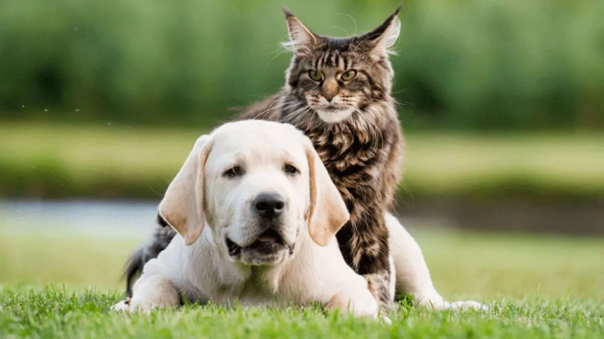

Quem Somos
A Lumie - Resgate e Adoção de Animais é uma organização sem fins lucrativos dedicada a dar uma nova chance a cães e gatos abandonados. Nosso trabalho começou com um pequeno grupo de voluntários apaixonados por animais que decidiram transformar o amor em ação. Hoje, resgatamos, tratamos, acolhemos e encontramos lares cheios de carinho para centenas de bichinhos. Acreditamos que cada vida importa — e que juntos podemos construir um mundo com mais empatia e respeito pelos animais.
Missão da ONG Lumie
Promover o resgate, reabilitação e adoção responsável de animais em situação de abandono, garantindo que cada um receba amor, cuidados e uma nova oportunidade de vida.
Visão
Ser referência em bem-estar animal e adoção consciente, inspirando pessoas a transformar o mundo por meio da compaixão e do respeito às vidas que não têm voz.
Valores
Valorizamos o respeito, o cuidado e o amor pelos animais. Trabalhamos com empatia e dedicação para garantir bem-estar, resgate e uma nova chance a cada vida que passa por nossas mãos.
Contato com a ONG Lumie
Rua Catulo da Paixão Cearense, 1020 -Bairro: Miramar - JOÃO PESSOA - PB.Telefone: (83) 99495-4545
Email: contato@organizaçãoonglumie.org.br